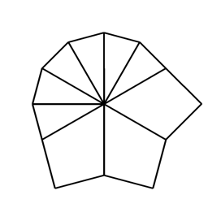
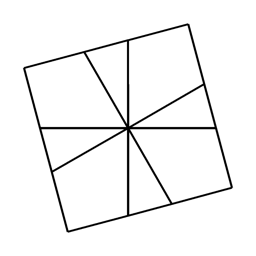
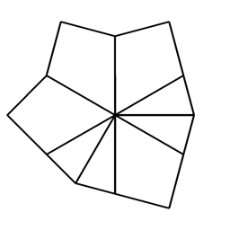
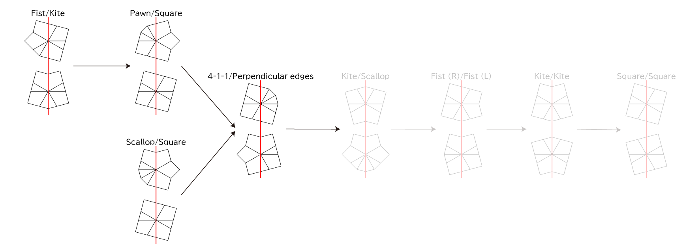

Square-1の成形
ルービックキューブ関連 > Square-1の成形
全手順覚えたくはない。 しかし、「Square-1の入り口」のD面にPaired edgesを作る手順だけだと、Paired edgesを作るまでに手間取ることがたまにある。 そこだけ何とかしたい……と整理した。
参考
1面の形状
名前は「Squanmate」から。
| 名前 | コーナー | エッジ | 画像 | メモ |
|---|---|---|---|---|
| 4-4 | 2 | 8 | 名前は塊ごとのエッジの個数。 | |
| 5-3 | 2 | 8 | ||
| 6-2 | 2 | 8 | ||
| 7-1 | 2 | 8 | ||
| 8 | 2 | 8 | ||
| 2-2-2 | 3 | 6 | 名前は塊ごとのエッジの個数。コーナーが3個までは、左右反転を除いて、塊ごとのエッジの個数から一意に定まる。 | |
| 3-3 | 3 | 6 | ||
| 3-2-1 | 3 | 6 | 線対称ではない。 | |
| 4-2 | 3 | 6 | 線対称ではない。 | |
| 4-1-1 | 3 | 6 | ||
| 5-1 | 3 | 6 | 線対称ではない。 | |
| 6 | 3 | 6 |  | |
| Square | 4 | 4 |  | 正方形。 |
| Kite | 4 | 4 | 凧。 | |
| Barrel | 4 | 4 | 樽。 | |
| Shield | 4 | 4 |  | 盾。 |
| Fist | 4 | 4 | 握り拳。線対称ではない。 | |
| Pawn | 4 | 4 | チェスのポーン？ 線対称ではない。 | |
| Mushroom | 4 | 4 | マッシュルーム。 | |
| Scallop | 4 | 4 | ホタテ貝。 | |
| Paired edges | 5 | 2 | 2個のエッジがくっついている。 | |
| Perpendicular edges | 5 | 2 | 2個のエッジが垂直の位置にある。 | |
| Parallel edges | 5 | 2 | 2個のエッジが（ほぼ）平行の位置にある。 | |
| Star | 6 | 0 | 星。 |
形状の個数
U面とD面の組み合わせは、当然コーナーとエッジの個数の合計がそれぞれ8個になるものに限る。 また、U面とD面の形状を入れ替えたものは同一視する。 そのままスライス（ / ）と、U面とD面を入れ替えて (6, 6)/ は同じ状態になる。 コーナーが2個エッジが8個と、コーナーが6個エッジが0個の組み合わせは、5×1=5通り。 コーナーが3個エッジが6個と、コーナーが5個エッジが2個の組み合わせは、7×3=21通り。 コーナーが4個とエッジが4個同士の組み合わせは、上下を入れ替えたものを同一視することを考慮して、8+7+…+2+1=36通り。
線対称ではないものについて、U面かD面のどちらか一方が線対称ではない場合、手前と奥を反転させた手順を回せば良いので、同一視できる。 U面もD面も線対称ではない場合だけ考慮が必要。 U面もD面も線対称ではないのは、FistかPawnがU面とD面にある場合のみ。 これらの組み合わせは3通り。
ということで、形状の個数は、完成状態であるSquare/Squareも含めて、5+21+36+3=65個。
Paired edges
「Square-1の入り口」の通り。 これを覚えれば、途中の形状も含めると、次の14個がカバーできる。
- Square/Square
- Kite/Kite
- Barrel/Barrel
- Scallop/Scallop
- 4-2/Paired edges
- 6/Paired edges
- 2-2-2/Paired edges
- Fist (R)/Fist (L)
- Kite/Scallop
- 5-1/Paired edges
- Fist/Scallop
- 4-1-1/Paired edges
- 3-2-1/Paired edges
- 3-3/Paired edges
図の向きからスライスすると、次の形状に遷移する。 D面は、U面方向からではなく、D面方向から見た向きを描いている。
1手でPaired edges
Paired edgesが無く、1手でPaired edgesにできる、すなわち、U面とD面にコーナー3個と、コーナー2個とエッジが2個がある形状は次の31個。 D面にStarではなくPaired edgesを作るのは、1手でその形にできる形状が多い点で強い。


コーナー3個の塊を作る
次の14個の形状は、1手でコーナー3個の塊を作る（あるいは3個の塊をそのままにする）ことができ、そのとき（コーナー3個の塊の作り方が複数ある場合でも）対面に必ずコーナー2個とエッジ2個の塊ができる。 次の1手でPaired edgesを作れば良い。
残り
残りは次の6個の形状。 このうち、Kite/Squareは1手でコーナー3個の塊を作ることができない。 他の5個は、コーナー3個の塊を作ることはできるし、その中には対面にコーナー2個とエッジ2個ができるものがあるが、コーナー3個の作り方によっては対面にコーナー2個とエッジ2個ができない場合がある。
- 7-1/Star
- 4-1-1/Perpendicular edges
- Kite/Square
- Pawn/Square
- Scallop/Square
- Fist/Kite
7-1/Star
/ (3,0)/ (-5,-4)/ (-3,2)/ (-3,-2)/ (-2,0)/ で生成できる。 次の2個の位置でスライスを回すのがだめ。 U面にエッジ2個のペアができない。 これら以外は、どの位置で回してもコーナー3個の塊と、コーナー2個エッジ2個ができる。


Kite/Square
/ (3,0)/ (1,0)/ (-2,0)/ (2,0)/ (-2,0)/ (1,0)/ で生成できる。 向きが同じFist/Fistか、Kite/Square自身にしか遷移しない。 Fist/Fistにして、コーナー3個の塊を作る。
他
残り4個の4-1-1/Perpendicular edges, Pawn/Square, Scallop/Square, Fist/Kiteについて、これらの形状が乗っている最短ルートがある。 これを覚えるのが良いだろう。

Kite/Scallop以降はPaired edgesと同じ。
Fist/Kiteは / (3,0)/ (-5,-4)/ (0,2)/ (-3,4)/ (-4,0)/で、Scallop/Squareは、 / (3,0)/ (-5,-4)/ (0,2)/ (6,4)/ で生成できる。
整理するために各形状の最短手順を眺めていると、Paired edgesを経由すると手数が伸びる形状がそれなりにあった。 少しずつでもPaired edgesを経由しない最短手順を覚えていくのが良いのだろう。
@kusano_k